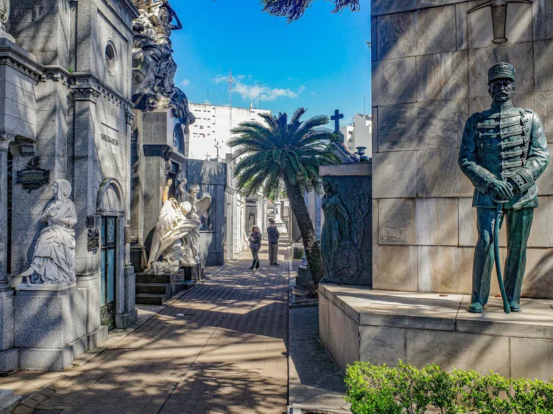

Cały sekret w jednym zdaniu: bądź przy bramie na Junín o 9:00. Cmentarz Recoleta rzadko bywa zatłoczony tak, jak zatłoczone są Mont-Saint-Michel czy Watykan — cztery i pół tysiąca grobowców wchłania mnóstwo ludzi — ale jedna wąska alejka, ta z nazwiskiem Duarte nad drzwiami, korkuje się na amen od późnego poranka. Przyjdź na otwarcie, a Evita, anioły i niskie światło należą tylko do ciebie.
Reszta tego przewodnika dopowiada szczegóły: jak wygląda każda godzina dnia, które dni są spokojne i jak działają pory roku, gdy jesteś na południe od równika. A skoro najlepsza godzina to ta przed przyjściem grup, to właśnie wtedy audioprzewodnik ma najwięcej sensu — nie czekasz na żadną godzinę startu, po prostu wchodzisz.
Dopiero planujesz całą wyprawę? Zacznij od naszego kompletnego przewodnika po Cmentarzu Recoleta, a potem wróć tu, żeby wybrać swój moment.
Najlepsza pora w skrócie
Weź audioprzewodnik →
Najlepsza pora dnia, godzina po godzinie
9:00 — otwarcie
Wstęp dla turystów zaczyna się o 9:00 (brama dla rodzin otwiera się wcześniej; to wejście nie jest już dostępne dla zwiedzających). Przez pierwszą godzinę cmentarz należy do garstki fotografów, dozorcy z miotłą i, przy odrobinie szczęścia, kota na kopule. Słońce jest nisko i pada z boku, a tego właśnie chce rzeźbiony kamień: reliefy nabierają głębi, inskrypcje stają się czytelne, a fasady zwrócone na wschód wyglądają najlepiej. Idź najpierw do Evity, jeśli to ona jest twoim priorytetem — to jedyna godzina, kiedy jej alejka jest cicha — albo przejdź trasę po kolei i dotrzyj do niej około 9:40, wciąż przed wszystkimi.
10:30–15:00 — grupy
O wpół do jedenastej wycieczki autokarowe i cogodzinne bezpłatne oprowadzania są już w środku, a w południe w alejce Evity potrafią stać naraz trzy albo cztery grupy. Pięciominutowy przystanek zamienia się w dwadzieścia pięć. Latem marmur oddaje ciepło, a w wąskich alejkach nie ma cienia, kawiarni ani wody. Jeśli to jedyna pora, o której możesz przyjść, zacznij od dalszych alejek — bokser, noblista, dozorca — i wróć do Evity po 15:00.
15:30–17:00 — drugie okno
Grupy wychodzą, światło przechodzi na zachód, a wnętrza grobowców, które przez cały ranek były ciemne — między innymi Adolfa Bioya Casaresa — rozświetlają się przez szklane drzwi. To najlepsza godzina na zaglądanie do środka. Tylko nie graj na styk: przejdź przez bramę najpóźniej o 16:00, bo przed zamknięciem obsługa zaczyna opróżniać alejki.

Najlepszy dzień tygodnia
Najciszej jest w środku tygodnia. Soboty i niedziele przyciągają argentyńskie rodziny (wchodzą bezpłatnie), jarmark rękodzieła na sąsiedniej Plaza Francia i więcej cogodzinnych bezpłatnych oprowadzań — w weekendy ruszają o 9:00 zamiast o 10:00, co zjada twoją cichą godzinę. Jeśli możesz przyjść tylko w weekend, bądź o 9:00 i idź prosto do Evity. Argentyńskie święta państwowe zachowują się jak niedziele; 26 lipca, w rocznicę jej śmierci, i 17 października, w peronistowski Dzień Lojalności, alejka Duarte wypełnia się kwiatami i pielgrzymami — poruszający widok, ale spokojnych zdjęć nie zrobisz.

Posłuchaj opowieści przy samych grobowcach
22 przystanki · ~1,5 h · mapa offline — od €9.99, jedna płatność, bez abonamentu.
Weź audioprzewodnikNajlepsza pora roku — i pułapka półkuli
Buenos Aires leży na południe od równika, więc dla większości naszych czytelników kalendarz stoi na głowie. Boże Narodzenie to pełnia lata; lipiec to środek zimy. Co roku ktoś przyjeżdża w styczniu ze swetrem albo w lipcu w sandałach.
Wiosna: wrzesień–listopad
Najlepsza pora roku. Łagodne dni, czyste światło, a w listopadzie miejskie jakarandy kwitną na fioletowo — kilka rośnie na skraju cmentarza, mnóstwo na alejach wokół. Dość ciepło na alejki, dość chłodno, żeby chodzić dwie godziny.
Lato: grudzień–luty
Gorąco i wilgotno, często powyżej 30 °C, a kamień cmentarza to potęguje. Wtedy zasada 9:00 przestaje być radą, a staje się kwestią przetrwania: w południe wąskie alejki to piekarnik bez cienia. Weź wodę i czapkę; w środku nic nie kupisz. W styczniu wielu porteños wyjeżdża z miasta, więc jest w nim spokojniej.
Jesień: marzec–maj
Drugi dobry moment. Miękkie światło, przyjemne temperatury, mniej zwiedzających niż wiosną. Kwiecień jest uroczy.
Zima: czerwiec–sierpień
Raczej łagodnie niż zimno — około 8–15 °C, jednego dnia szaro, drugiego słonecznie. Cmentarz jest wtedy najspokojniejszy, niskie zimowe słońce przez cały dzień schlebia rzeźbom, a kolejki niemal nie istnieją. Weź porządny płaszcz: wilgoć Buenos Aires wchodzi w kości.
Deszcz, upał i zamknięcia
Cmentarz jest otwarty codziennie przez cały rok, od 9:00 do 17:00. Deszcz go nie zamyka, ale mokry marmur i stary bruk są śliskie i obsługa może zamknąć pojedyncze alejki. W ulewę idź do sąsiedniej bazyliki (bezpłatnie) albo do La Bieli po drugiej stronie placu i wróć, gdy przejdzie — mokry kamień pięknie wychodzi na zdjęciach. Pogrzeby i uroczystości rodzinne mają pierwszeństwo o każdej porze; jeśli alejka jest zajęta, ustąp i wróć później.
Jeśli przyjeżdżasz po zdjęcia
Rano na fasady zwrócone na wschód i portyk; późne popołudnie na wnętrza od zachodu przez szyby; pochmurne dni na brąz (bez refleksów); po deszczu na odbicia w alejkach. Stań pod kątem i osłoń obiektyw, żeby pokonać odbicia w drzwiach. A przy grobowcu Evity najpierw zrób miejsce, potem zdjęcie.
Wszystko razem: idealne pół dnia
- 8:45 — Kawa w La Bieli, pod olbrzymim drzewem gomero, z biletem kupionym już na Entradas BA.
- 9:00 — Przez portyk. Audioprzewodnik pobrany wcześniej na hotelowym Wi-Fi.
- 9:00–10:45 — Trasa z 22 przystankami, Evita około 9:40, we własnym tempie.
- 10:45 — Wyjście, zanim wejdą grupy. Bazylika obok (bezpłatnie), potem muzeum w krużgankach, jeśli masz ochotę.
- 11:30 — Centro Cultural Recoleta, muzeum Bellas Artes albo Floralis Genérica — wszystko w dziesięć minut pieszo.
Audioprzewodnik po Cmentarzu RecoletaDostęp od razu
- 100% offline — na cmentarzu nie potrzebujesz Wi-Fi ani internetu
- Mapa offline z trasą — każdą opowieść uruchamiasz sam przy grobowcu
- Lektor po angielsku i hiszpańsku
- Działa na iOS i Androidzie
- 22 przystanki, około 1–2 godzin we własnym tempie
W skrócie
Dziewiąta rano, w środku tygodnia, jeśli możesz, wiosną albo jesienią, jeśli masz wybór. Cała reszta — opłata, trasa, opowieści — znaczy mniej niż ta pierwsza godzina z alejkami tylko dla ciebie.
Audioprzewodnik jest stworzony właśnie na tę godzinę: żadnej grupy, na którą trzeba czekać, mapa offline i 22 opowieści po angielsku lub hiszpańsku, które ruszają wtedy, kiedy ty. Weź audioprzewodnik — €9.99
Najczęstsze pytania
O której przyjść na Cmentarz Recoleta?
O 9:00, gdy otwiera się wejście dla turystów. Alejki są puste, światło leży nisko na marmurze, a przy grobowcu Evity nie ma kolejki. Około 10:30 przychodzą grupy.
Kiedy jest najbardziej tłoczno?
Mniej więcej od 10:30 do 15:00, zwłaszcza koło południa, gdy kilka grup z przewodnikami zbiega się naraz w wąskiej alejce Evy Perón. Weekendy i argentyńskie święta są bardziej zatłoczone niż dni powszednie.
Czy późne popołudnie jest dobre?
Tak — po 15:30 grupy rzedną, a wnętrza od strony zachodniej rozświetlają się przez szyby. Przyjdź najpóźniej o 16:00; wejście dla turystów zamyka się o 17:00.
Jaka pora roku jest najlepsza na wizytę w Buenos Aires?
Wiosna (wrzesień–listopad) i jesień (marzec–maj): łagodnie, jasno, w listopadzie kwitną jakarandy. Lato (grudzień–luty) jest gorące i wilgotne — marmurowe alejki w południe zamieniają się w piekarnik. Zima (czerwiec–sierpień) jest łagodna i spokojna.
Czy pory roku naprawdę są odwrócone?
Tak. Buenos Aires leży na półkuli południowej: Boże Narodzenie to pełnia lata, lipiec to środek zimy. Goście z północy regularnie pakują się na niewłaściwą półkulę.
Czy cmentarz zamykają w deszcz albo w święta?
Jest otwarty 9:00–17:00 codziennie przez cały rok. Ulewny deszcz sprawia, że bruk robi się śliski, i może zamknąć pojedyncze alejki; pogrzeby i uroczystości mają zawsze pierwszeństwo przed ruchem turystycznym.
Czytaj dalej
Niektóre linki na tej stronie to linki partnerskie (GetYourGuide, Booking.com, TouringBee). Jeśli zarezerwujesz przez nie, możemy dostać niewielką prowizję — bez żadnej dopłaty z twojej strony. Nie wpływa to na to, co polecamy. Zobacz naszą Informację o linkach partnerskich.